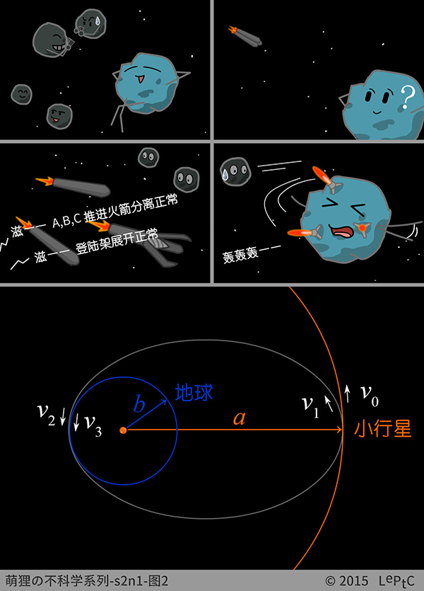
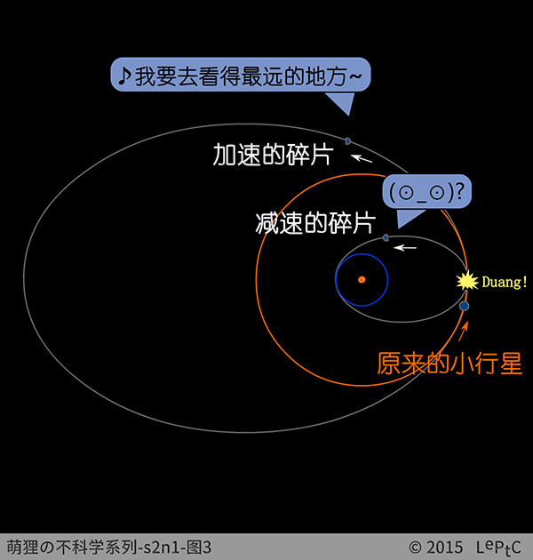
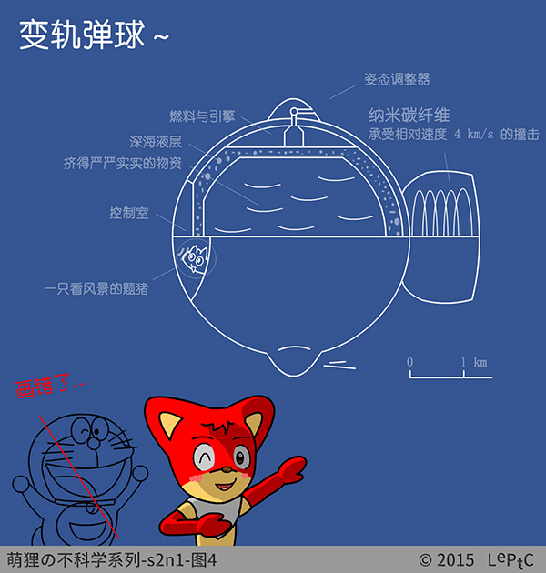

如果是开发近地小行星↗的话，它们的轨道本来就是和地球轨道相交的，所以我们只要等着它到碗里来就好啦～
题主：那我的小说肿么办！ (╯‵□′)╯︵┻┻
好吧好吧，假设某一天，我们突然在小行星带发现了一个有很高开采价值的矿石小行星！决定通过变轨的方式把它搬到地球…
矿石小行星的半径设定为 1 公里，则它的质量 $m$ 约为 $1.3\E{13}\uni{kg}$ 。位置设定于小行星带内侧，公转半径 $a$ 为 2.3 天文单位（1 天文单位约为地球的公转半径）。设小行星公转速度为 $v_0$，地球公转速度为 $v_3$ 。
展开计算过程
取钻石矿石的密度为 $3\E{3}\uni{kg/m^3}$ ↗，则质量约为
{% highlight mma %}
4/3 \[Pi] (10^3)^3*3*(10^3) // N
= 1.25664*10^13
{% endhighlight %}
{% include header.html param="方案一：火箭反推减速" %}
用简单粗暴的爆炸来减速小行星的话，能量利用的效率很低，而且有可能会把小行星炸碎。有一种基于核爆炸的火箭引擎，叫作核脉冲推进引擎↗。把聚变燃料用在这种火箭上，靠反推来减速是不是更合适呢？先估算一下试试吧～

如图 2，小行星需要做两次变轨。第一次变轨是 $v_0$ 减速至 $v_1$ ，减速后的小行星受到的引力大于所需向心力，掉入图中灰色的椭圆转移轨道。第二次变轨是小行星到达和地球公转轨道相切的位置后，由 $v_2$ 变速为 $(v_3+v_I)$ （我们希望小行星最后停留在绕地球转的轨道上，因此小行星最后相对地球至少要具有相当于第一宇宙速度 $v_I$ 的动能）。还有势能因为毕竟不能贴着地球表面转，这个问题会在方案二讲…
展开推导过程 (1)~(3)
由万有引力等于向心力可得 $v=\sqrt{GM/r}$ ，即
$$v_0=\frac{k}{\sqrt{a}},\ v_3=\frac{k}{\sqrt{b}}$$
由角动量守恒有 $v_1a=v_2b$，由动能差等于引力势能差
$$\frac12(v_2^2-v_1^2)=k^2(\frac1b-\frac1a)$$
联立两个方程可解得
{% highlight mma %}
Solve[{a v1 == b v2 && 1/2 (v2^2 - v1^2) == k^2 (1/b - 1/a)}, {v1, v2}]
{% endhighlight %}
$$v_1=k\sqrt{\frac{2b}{(a+b)a}},\ v_2=k\sqrt{\frac{2a}{(a+b)b}}$$
以上速度都可以由椭圆半轴长和太阳质量求解出来，然后就可以求出所需的动量变化量 $\Delta p$。设火箭的喷气速度为 $v_e$，则可换算出所需工质的质量 $m_e=\Delta p/v_e$。
展开计算过程 (1)~(11)
（远低于光速，不用考虑相对论）
{% highlight mma %}
In[1]:= k = Sqrt[1.9891*10^30*6.6738*10^-11]
Out[1]= 1.15217*10^10
In[2]:= b = 149597887000; a = 2.3 b
Out[3]= 3.44075*10^11
In[4]:= m = 4/3 \[Pi] (10^3)^3*3*10^3;
In[5]:= v0 = k/Sqrt[a]
Out[5]= 19642.1
In[6]:= v3 = k/Sqrt[b]
Out[6]= 29788.7
In[7]:= v1 = Sqrt[(2 b)/((a + b) a)] k
Out[7]= 15291.4
In[8]:= v2 = Sqrt[(2 a)/((a + b) b)] k
Out[8]= 35170.1
In[9]:= ve = 10^6;
In[10]:= me = (m (v0 - v1))/ve
Out[10]= 5.46731*10^10
{% endhighlight %}
维基百科告诉我聚变燃料释放能量的效率为 1% $mc^2$ ↗，因此把能量换算成聚变燃料质量为
{% highlight mma %}
In[11]:= (1/2 me *ve^2)/(0.01*299792458^2)
Out[11]= 3.0416*10^7
{% endhighlight %}
维基百科告诉我核脉冲推进↗的比冲的理论上限是 $10^5\uni{s}$，相当于喷气速度↗达到 $v_e\approx 10^6\uni{m/s}$ ，代入得需要工质 $5.5\E{10}\uni{kg}$ 。工质的动能若由聚变燃料提供，所需燃料的质量约为 3 万吨。
嘛，我们最大的运载火箭土星五号 ↗ 的运载能力在 100 吨的量级，如果你有无限经费的话（← 做梦！(ｏ‵-′)ノ”），分上几百次把足够的聚变燃料送到小行星上去也不是不可能… 难以解决的是动量问题，火箭引擎的比冲（喷气速度）太小，用燃料作工质远远不够用。而更高比冲的引擎的推力又太小↗，导致减速需要很漫长的时间。钻石还不够燃料钱的说…
老板出现！：能不能再给力点？～

萌狸：报告老板！如果我们发射一个钻石镐采矿船上去，先就地开发再搬运的话，质量 $m$ 就可以节省很多。
老板：不好，矿石也是重要的科研资源嘛，还有没有别的方案丫？
萌狸：报告老板！要解决动量问题的话，可以试试就地取材～我认为，剧本应该是这个样子滴～
{% include header.html param="方案二：炸开小行星" %}
二号方案：我们将满足题主对核弹的热衷，直接用核弹将小行星炸成两半。由于动量守恒，一半的小行星碎片会加速，另一半则会减速。如果核弹的当量和位置布置得准确，就可以让减速的那一半准确地达到速度 $v_1$ ，然后就没有其它问题了。额，只不过加速的那一半会进入更远的椭圆轨道…

展开计算过程 (12)
减速的那块末速度为 $v_1$ ，由动量守恒得加速的那块的末速度为 $(2v_0-v_1)$ ，由质心系动能 $2\times\frac14m(v_0-v_1)^2$ 加质心动能 $\frac12mv_0^2$ 减原动能 $\frac12mv_0^2$，得爆炸需提供的能量至少为 $\frac12m(v_0-v_1)^2$ ，同理换算成聚变燃料质量为
{% highlight mma %}
In[12]:= (1/2 m*(v0 - v1)^2)/(0.01*299792458^2)
Out[12]= 132333.
{% endhighlight %}
所以剧本应该是这个样子滴：第一批聚变燃料送到小行星轨道用来炸开小行星，质量至少为 132 吨（没算把燃料本身送上太空需要的燃料，不过至少在我们正常的运载能力范围之内了… ）。小行星的第二次变轨最好不要用炸开两半的办法，因为另一块碎片很有可能会回来撞上地球… 实际上，第二次变轨既有可能是减速也有可能是加速，因此如果轨道设计得好的话，可以只消耗很少能量就刚好捕获它～（早知道就把小行星设定得再远一点… →_→）
老板：一半的钻石矿就这样浪费了…
萌狸：如果钻石矿周围有速度相近的其它小行星的话，用那些没用的小行星当炮灰也可以的哦…
老板（45 度角仰望星空）：对了，我们还有一些类似的任务要做，有很多物资等着送入小行星带公转轨道，部分物资已经在转移轨道上了，能不能把这些一块给解决啦？
萌狸：这是没钱还想倒找钱的节奏啊！！！

{% include header.html param="方案三：弹性碰撞" %}
萌狸：报告老板！把小行星搬到地球本质上是减少引力势能的过程，如果我们把这部分能量利用起来，就可以同时把物资搬上去啦～
三号方案：用需要送到小行星轨道的物资和小行星弹性碰撞，交换速度！

所以剧本应该是这个样子滴：把转移轨道上的物资收集起来，使得质量和小行星的质量相等。这样弹性碰撞的结果就是速度交换，小行星进入椭圆转移轨道，物资进入小行星公转轨道。再收集第二批相等质量的物资，在地球公转轨道等着，然后把小行星换下来。 (～￣▽￣)ノ撒花
{% include header.html param="三年后…" %}
（之后，狸星人花了两年时间将钻石矿小行星转移到母星附近，存放在月球轨道上慢慢开发～）
展开计算过程 (13)~(16)
由开普勒第三定律，椭圆轨道的周期为 $\tau=\frac{2\pi}{k}(\frac{a+b}{2})^{\frac32}$，则转完半个转移轨道需要的时间约为 387 天
{% highlight mma %}
In[13]:= \[Pi]/k ((a + b)/2)^((3/2))/(24*3600)
Out[13]= 387.022
{% endhighlight %}
同理可计算，从月球轨道落到地面需要的时间为 $\frac{\pi}{k_E}(\frac{r_E+r_M}{2})^{\frac32}$ ，约为 5 天
{% highlight mma %}
In[14]:= ke = Sqrt[5.9742*10^24*6.6738*10^-11]
Out[14]= 1.99676*10^7
In[15]:= re = 6372797; rm = 3.84*10^8;
In[16]:= \[Pi]/ke ((re + rm)/2)^((3/2))/(24*3600)
Out[16]= 4.96574
{% endhighlight %}
* 注：题猪（Questpig），一种在自然界中天然生成的生物。每当有人产生一个不靠谱的想法时，就会有一只题猪凭空生成，直到看到那个不靠谱想法的实现之后才会消失。
{% include header.html param="参考资料" %}
参考资料就是把作品中的外链都再列一遍，然而作者和编辑都很懒，于是就愉快地决定不写参考资料了～
{% include header.html param="审稿人" %}